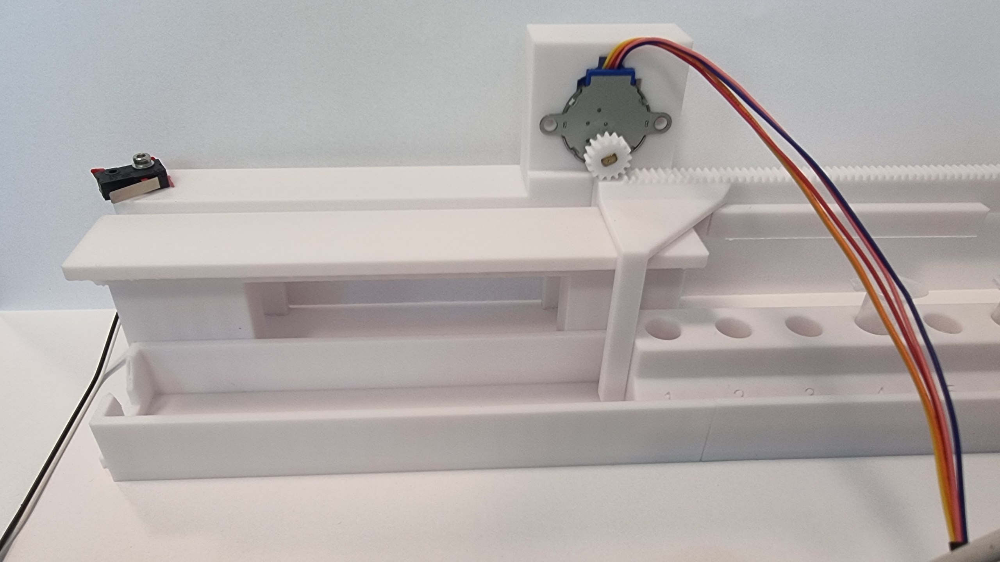

Sample-rack indexing stage — rack, pinion, and a switch that knows where zero is
The alignment module hosts the samples and indexes them under the dispensing nozzle. It does not move the dispensing head — it moves the samples. V2 proved the mechanism; V2.1 added a homing microswitch and the firmware that uses it, which is what turns an open-loop stage into one that knows where it is.

What it does
One of the core mechanical subsystems of the modular point-of-care liquid dispenser. Four jobs:
- Hosts the samples. Samples arrive in microcentrifuge tubes (1.5 or 2 mL), stored in a custom-made rack of 8.
- Makes room for the tube opener. The wide spacing between sample positions exists specifically so Pulkit's tube-opener mechanism can fit.
- Eases transport. The rack holds the samples together, so a whole set can be moved and loaded at once.
- Indexes under the nozzle. The stage moves the rack so each tube can be placed, in turn, under the dispensing module that delivers the liquid.
Design priorities — the gravity-protected layout
The design was driven by three priorities: cleanliness, compactness, and safety from cross-contamination. The layout in the photograph above is the direct expression of the third.
- The stepper motor — chosen for precision — and the pusher are mounted on top of the assembly.
- Mounting them up high keeps them safe from spillage: liquid travels downward, not upward, so splashes and spills cannot reach the drive train.
- The moving parts and the gear — the parts that are hard to clean — are therefore inaccessible to liquid. Gravity acts as the protector, with no seal, cover or consumable to maintain.
- The pusher travels on the vertical axis, which lets the nozzle deliver and dispense in a linear way.
Targets & pass criteria
Six criteria. Five are met; one is not, and it is the one that drives the next mechanical revision.
| Quantity | Target | Status |
|---|---|---|
| Positioning repeatability | Sub-millimetre — the nozzle must land inside a tube mouth every time | MET — ≤ 0.03 mm measured, better than needed by more than an order of magnitude |
| Return to zero after a full pattern | Land back on the same physical zero, with no cumulative drift | MET — 0.03–0.13 mm over three 132 mm round trips |
| Usable stroke | 8 positions at 22 mm pitch = 154 mm of travel | NOT MET — the rail delivers ~140 mm. Six moves (132 mm) run cleanly; a seventh would push the rack off the pinion. Mechanical redesign pending — see the risks |
| Indexing time | Fast enough not to dominate the dispensing cycle | MET — full-length home 22 s, down from 110 s. A single 22 mm index step is ~4 s |
| Must not disturb the rest of the system | Sharing the control bus with the liquid-level sensor must stall neither | MET — verified under live sensor streaming |
| Fail safe, not silently | A broken or disconnected endstop must halt the axis, not drive it into a hard stop | MET — verified by a severed-wire test |
All measured values are from the bench session of 2026-07-31 on axis 1 — the full results are further down the page.
Mechanism as built (V2.1)
A horizontal rack-and-pinion stage. The tube rack rides the moving carriage; the motor and pinion sit on a fixed bracket above the rail, engaging a toothed rack moulded into the carriage.
| Element | As built | Notes |
|---|---|---|
| Drive | 28BYJ-48 geared stepper, 12 V variant | Unipolar, with an internal reduction gearbox. Chosen for precision, and it holds position with the coils off |
| Transmission | Rack and pinion, pinion ⌀ 12.80 mm | Printed rack integral to the carriage |
| Guidance | Printed linear rail + carriage | Single axis, horizontal |
| Endstop | Single-pole double-throw roller-lever microswitch, at the left end of the rail | New in V2.1 — see homing |
| Payload | Custom rack, 8 tube positions, 1.5 / 2 mL microcentrifuge tubes | 22 mm pitch |
| Available stroke | ~140 mm | Short of the 154 mm the 8-position pattern needs |
Resolution — and why it is not a limitation
The motor delivers 4096 half-steps per output revolution. One pinion revolution advances the rack by its circumference, so the two together fix how many half-steps buy a millimetre:
4096 half-steps ÷ 40.2 mm ≈ 101.9 → 102 half-steps per mm
1 half-step ≈ 0.0098 mm (~10 µm)
The driver is a Darlington array with no current control, so half-stepping is the finest the drive can do — there is no microstepping available on this axis. At roughly 10 µm per half-step, that is not a limitation for this application.
Direction convention
The endstop is on the left. Positive step counts move the carriage right, away from the switch; negative counts move it left, toward the switch. This was established physically on the bench, not assumed from the wiring.
Homing — the microswitch (new in V2.1)
Why an endstop at all
Without one, the stage only knows relative position — it counts steps from wherever it happened to be at power-up. Every dispensing sequence would need the operator to place the carriage by hand first, and any missed step would silently corrupt every position afterwards with no way to recover. The microswitch gives the axis a physical zero it can find by itself, at boot and after any fault.
Switch choice and fail-safe wiring
The switch is single-pole double-throw — three terminals. The pair used is the one that reads closed when the lever is at rest, the normally-closed pair, with the input's internal pull-up enabled:
| Lever | Contact | Pin reads | Meaning |
|---|---|---|---|
| Free | Closed → pin pulled to ground | LOW | Not at endstop |
| Pressed | Open → pull-up wins | HIGH | At endstop |
There is no software inversion flag. A miswired switch is meant to surface as a wrong reading and be fixed in the wiring, not silently corrected in firmware.
Debounce
A reading is trusted only after 3 consecutive identical samples — roughly 15 ms of agreement at the control loop's sampling cadence, enough to reject microswitch bounce. A bounce accepted on the fast approach would latch a zero several millimetres early, and every later position would inherit that error.
The three-pass homing sequence
Homing is deliberately not a single move. It is fast where speed is free, and slow only where precision is actually produced.
| Pass | Direction | Speed / mode | Purpose |
|---|---|---|---|
| 1 — Fast approach | Toward the switch | Full-step, fast | Pure travel. Nothing precise happens until the switch trips, so this pass buys torque and halves the control traffic per mm |
| 2 — Back-off | Away from the switch | Full-step, a fixed 400 half-steps ≈ 3.9 mm | Release the switch and clear the carriage from it |
| 3 — Slow re-approach | Toward the switch | Half-step, ~4× slower | The only place the zero is set |
Starting with the lever already pressed is legal — the sequence falls through to the back-off pass with no special case.
Fault behaviour
Every failure mode stops the axis and reports, rather than continuing:
| Condition | Result |
|---|---|
| The fast approach exhausts its travel budget of 20 000 half-steps (~196 mm) without finding the switch | Halt, coils de-energised, homed flag stays false, fault reported |
| The switch still reads triggered after the 3.9 mm back-off — a stuck switch or a severed wire | Halt, fault reported |
| The slow re-approach exhausts its 500 half-step budget without re-triggering | Halt, fault reported |
The travel limit is counted in steps, not in wall-clock time — a slow axis is not a faulty one, and a time-based limit would fault a healthy long move.
Electronics & control path
The alignment axes sit behind a port expander on the shared serial bus and consume zero controller pins. This was a deliberate architectural decision: the controller's remaining pins are reserved for pumps 3–6, so alignment was routed through the expander from day one, and a direct-pin draft was written and discarded for exactly that reason.
| Element | As built |
|---|---|
| Expander | MCP23017 16-bit input/output expander at address 0x20, on the shared I²C bus |
| Pin usage | 10 of 16 — 4 coil lines per axis (8 total) plus 1 endstop input per axis (2). Six spare |
| Motor driver | ULN2003 Darlington array board, one per axis |
| Motor supply | 12 V rail — the same rail the pumps and the controller board already use, so alignment adds no converter |
| Current | ≈ 60 mA per energised coil at 12 V (~200 Ω/phase); ≈ 60–120 mA per axis while stepping. Well inside the driver's 500 mA/channel rating |
| Endstop inputs | Expander inputs with internal pull-ups enabled |
Power-on safety is passive
Every controller pin is high-impedance until firmware drives it, and the expander is not initialised until late in the boot sequence. What guarantees that no coil is energised in that window is passive, not firmware: 10 kΩ pull-downs on all eight driver inputs, plus the expander's own reset state, in which all pins are inputs. A 100 nF decoupling capacitor across the expander's supply pins prevents intermittent bus errors under motor load.
Coils park after every move
The coils are de-energised on every exit path — normal completion, fault, abort, refusal, and start-up. A 28BYJ-48 left energised heats up, and the gearbox already holds position without holding current. Parking is the thermal design, not politeness.
Interlocks
- One axis at a time. A second move while one is running is refused, not queued.
- A move toward an already-triggered endstop stops on the switch, not on the step count. Moves away from a triggered switch are never blocked — that is how the operator recovers from a pressed switch.
- The endstop is sampled before every single step, so the interlock reacts within a burst of steps rather than between control-loop passes.
Console commands
Bench bring-up is driven from a serial console.
| Command | Effect |
|---|---|
| AXIS? | Status for both axes — expander present, homed flag, position in half-steps and mm, live endstop reading, active mode, steps remaining, and the compiled-in constants |
| AXIS <1|2> <steps> | Signed half-step move. Negative is toward the endstop, positive away from it. The magnitude is clamped to the travel budget |
| AXIS STOP | Abort the moving axis and park its coils |
| HOME <1|2> | Run the three-pass homing sequence. On success the position zeroes and the homed flag sets |
Motion performance — 110 s to 22 s
The first working version homed 132 mm in 110 seconds — usable, but slow enough to dominate a dispensing cycle. Three changes took it to 22 seconds:
| Change | What it addressed |
|---|---|
| Burst stepping | The real ceiling was not the bus at all — it was the control loop's own cadence, which stepped once per pass and then waited. Stepping a batch per pass amortises that overhead away |
| Bus clock 100 → 400 kHz | Per-step bus traffic — one coil write plus one endstop read — fell from ~700 µs to ~175 µs |
| Full-stepping the travel passes | Half the bus transactions per mm, and it lands only on the double-coil states, which produce more torque |
| Metric | Original | After burst stepping | Final |
|---|---|---|---|
| Homing travel, per half-step | 8.00 ms | 2.32 ms | 0.89 ms (9× faster) |
| Dispensing move, per half-step | 8.00 ms | 2.32 ms | 1.79 ms (4.5× faster) |
| Slow re-approach | ~25 ms | ~25 ms | ~24 ms — unchanged by design |
| Full 132 mm home | 110 s | 42 s | 22 s |
No steps were lost at the final settings.
Where the remaining 22 s goes
12 s of fast travel, 0.3 s of back-off (too short to draw), and 9.5 s of slow crawl. Bars are scaled against the 22 s total.
The crawl exists only to re-cross the 3.9 mm back-off, so shortening the back-off cuts it almost proportionally — but that needs one measurement first: how far the carriage must actually retreat before the switch releases. That measurement has not been made.
Bench validation — 2026-07-31, axis 1
Hardware under test: one motor, one driver board, one microswitch.
| # | Question | Result |
|---|---|---|
| a | Do the expander and the liquid-level sensor both answer on the shared bus? | PASS — both present. Adding the expander did not disturb the sensor |
| b | Does the endstop read correctly at rest and pressed? | PASS — lever free reads free; carriage driven into the switch reads at endstop |
| c | Which way do positive steps move the carriage? | PASS — positive = right = away from the switch; the switch is on the left |
| d | Do the coils park after a move? | PASS — all four driver indicator lights off at rest |
| e | Homing pass counts (fast / back-off / slow) | PASS — 1890 / 400 / 400 half-steps |
| f | Homing repeatability, three runs from different offsets | PASS — spread 2 half-steps ≈ 0.02 mm. Commanded 800 / 1500 / 1100 → counted 800 / 1502 / 1100. Read the limit on this figure below. |
| g | Return-to-zero accuracy, three 132 mm round trips at final speed | PASS — commanded 13 464 out; homing counted 13 470 / 13 467 / 13 477 back = +0.06 / +0.03 / +0.13 mm. No step loss |
| h | Shared-bus stress — home the axis while the liquid-level sensor streams | PASS — no stall. 75 sensor readings, every one 0.47–0.55 s apart against a 500 ms target, throughout all three homing passes. Homing landed 0.05 mm from target. The step interval stretched 8.00 → 8.11 ms (1.6 %). Re-verified twice more after the speed work |
| i | Severed-wire control — endstop unplugged, then home | PASS — correct fault reported; the carriage moved 3.9 mm and stopped, in 3.2 s |
| j | Half-steps per mm against the calculated 102 | PASS — exact. 13 464 half-steps → 132 mm measured = 102.0 /mm |
| k | Control loop alive, no resets during a move? | PASS — the touchscreen kept rendering and responded to taps throughout |
| l | Travel-budget fault, negative control | NOT RUN — skipped by operator decision; see the risks |
| m | Rail voltage under load; coil resistance of both motors | NOT MEASURED — needs a multimeter |
The honest limit on the repeatability figure
A diagnostic that lied
Mid-session, the status command was found to report stale endstop readings: it printed whatever the debounce filter had last latched, and the filter is only fed while an axis is moving. At rest it reported the previous move's value. This was caught during the severed-wire test — with the endstop physically disconnected, the status command reported free, the exact opposite of the truth.
The hardware was behaving perfectly; the diagnostic was lying. It was fixed the same day — the status command now takes a fresh debounced sample before printing. Any endstop reading recorded before 2026-07-31 is invalid.
A discarded result
One mid-session set of round trips degraded badly and looked like a rack derailment. It was contaminated — the rig was moved and the trigger touched mid-run — and has been discarded in full. It survives only as the untested derailment-detection idea in the risks below.
Open questions & risks
Decision: redesign the affected parts to a stroke greater than 170 mm. This is mechanical only — the electronics, the firmware and the control logic are unaffected by the geometry change, and the firmware travel budget is already set to 196 mm to accommodate it.
Next steps
Version log
V2 Built 2026-06-25 — rack-and-pinion indexing stage. Open-loop: no position reference.
Rack-and-pinion indexing stage with the gravity-protected layout — motor and pusher mounted above the rail. Moves one rack at a time and does that job well. Open-loop: the stage has no position reference of its own, so it can only count steps from wherever it starts.
V2.1 Built 2026-07-30, bench-validated 2026-07-31 — homing microswitch added; repeatable zero at ≤ 0.03 mm and a 132 mm home in 22 s.
Homing microswitch added. A single-pole double-throw roller-lever endstop at the left end of the rail, fail-safe normally-closed wiring, the three-pass homing sequence, coil parking, and a step-counted travel limit. Driven through a port expander using zero controller pins.
Repeatable zero measured at ≤ 0.03 mm; the 132 mm home taken from 110 s to 22 s with no step loss; verified not to disturb the liquid-level sensor sharing the bus. The session also exposed and fixed a stale-reading diagnostic bug, and uncovered the stroke shortfall that drives the V3 redesign.
V3 Not started — mechanical stroke redesign beyond 170 mm, second axis, rack queueing.
Nothing has been built. The scope is set by the open risks: a stroke redesign beyond 170 mm, wiring and proving the second axis, and the input/output rack queues. See next steps.
Source documents & test data
The electronics and firmware for this module live in the Arduino firmware repository, not in this one. That repository is authoritative for anything about the built system; the record on this site is the design-side view of it.
| What | Where |
|---|---|
| This page, in full, as the design-side record | PROTOTYPE.md — alongside this page |
| Wiring table, pin allocation, power tree, operator checklist, bench results | Firmware repository → the hardware architecture document, alignment-module section |
| Homing state machine, phase tables, every constant with its rationale | Firmware repository → the alignment bench source file |
| Session narrative — firmware written, bench session, speed work | Firmware repository → project log, entries 2026-07-30 and 2026-07-31 |
| Why the 12 V motor variant, the rail-count trade-off, and the open question of whether alignment runs at 5 V or 12 V in the ideal 24 V design | Firmware repository → the ideal-design document. Counterfactual — it describes nothing that is wired |
Precedence: where the hardware architecture document and the ideal-design document disagree about the built system, the hardware document wins. Numbers on this page are taken from the hardware document and the bench session, not from the ideal design.